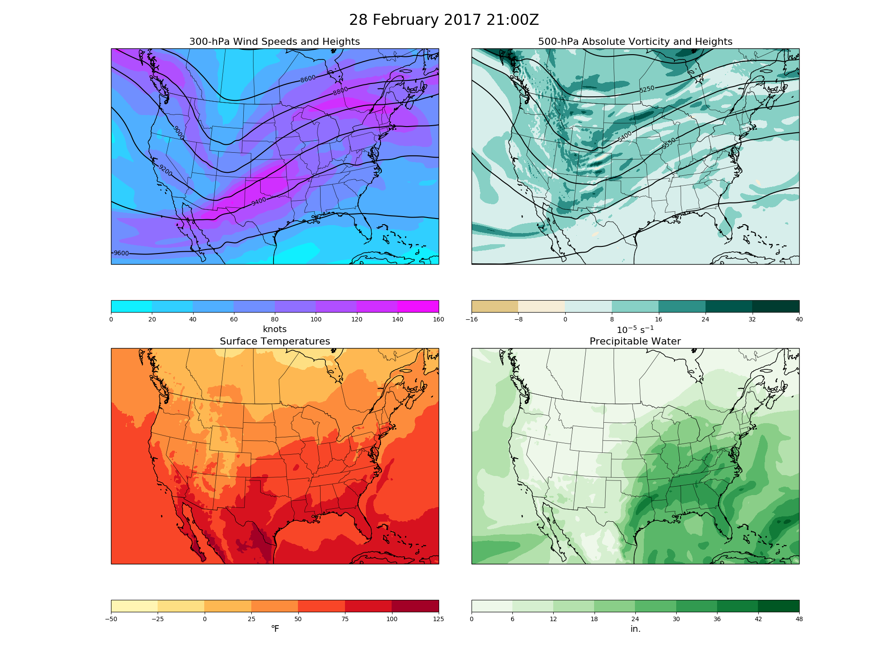

<!DOCTYPE html>
<!--[if IE 8]><html class="no-js lt-ie9" lang="en" > <![endif]-->
<!--[if gt IE 8]><!--> <html class="no-js" lang="en" > <!--<![endif]-->
<head>
  <meta charset="utf-8">
  
  <meta name="viewport" content="width=device-width, initial-scale=1.0">
  
  <title>Four Panel Map &mdash; MetPy 0.5.1</title>
  

  
  
    <link rel="shortcut icon" href="../_static/metpy_32x32.ico"/>
  
  
  
    <link rel="canonical" href="https://unidata.github.io/MetPy/latest/examples/Four_Panel_Map.html"/>
  

  

  
  
    

  

  
  
    <link rel="stylesheet" href="../_static/css/theme.css" type="text/css" />
  

  
    <link rel="stylesheet" href="../_static/gallery.css" type="text/css" />
  
    <link rel="stylesheet" href="../_static/theme_override.css" type="text/css" />
  

  
        <link rel="index" title="Index"
              href="../genindex.html"/>
        <link rel="search" title="Search" href="../search.html"/>
    <link rel="top" title="MetPy 0.5.1" href="../index.html"/>
        <link rel="up" title="MetPy Examples" href="index.html"/>
        <link rel="next" title="Meteogram" href="meteogram_metpy.html"/>
        <link rel="prev" title="Advanced Sounding" href="Advanced_Sounding.html"/> 

  
  <script src="../_static/js/modernizr.min.js"></script>

</head>

<body class="wy-body-for-nav" role="document">

   
  <div class="wy-grid-for-nav">

    
    <nav data-toggle="wy-nav-shift" class="wy-nav-side">
      <div class="wy-side-scroll">
        <div class="wy-side-nav-search">
          

          
            <a href="../index.html" class="icon icon-home"> MetPy
          

          
            
            
          
          </a>

          
            
            
              <div class="version">
                0.5.1
              </div>
            
          

          
<div role="search">
  <form id="rtd-search-form" class="wy-form" action="../search.html" method="get">
    <input type="text" name="q" placeholder="Search docs" />
    <input type="hidden" name="check_keywords" value="yes" />
    <input type="hidden" name="area" value="default" />
  </form>
</div>

          
        </div>

        <div class="wy-menu wy-menu-vertical" data-spy="affix" role="navigation" aria-label="main navigation">
          
            
            
              
            
            
              <ul class="current">
<li class="toctree-l1"><a class="reference internal" href="../installguide.html">Installation Guide</a></li>
<li class="toctree-l1"><a class="reference internal" href="../units.html">Unit Support</a></li>
<li class="toctree-l1 current"><a class="reference internal" href="index.html">MetPy Examples</a><ul class="current">
<li class="toctree-l2 current"><a class="reference internal" href="index.html#general-examples">General Examples</a><ul class="current">
<li class="toctree-l3"><a class="reference internal" href="Advanced_Sounding.html">Advanced Sounding</a></li>
<li class="toctree-l3 current"><a class="current reference internal" href="#">Four Panel Map</a></li>
<li class="toctree-l3"><a class="reference internal" href="meteogram_metpy.html">Meteogram</a></li>
</ul>
</li>
<li class="toctree-l2"><a class="reference internal" href="index.html#calculations">Calculations</a></li>
<li class="toctree-l2"><a class="reference internal" href="index.html#file-formats">File Formats</a></li>
<li class="toctree-l2"><a class="reference internal" href="index.html#gridding">Gridding</a></li>
<li class="toctree-l2"><a class="reference internal" href="index.html#plotting">Plotting</a></li>
</ul>
</li>
<li class="toctree-l1"><a class="reference internal" href="../tutorials/index.html">MetPy Tutorials</a></li>
<li class="toctree-l1"><a class="reference internal" href="../api/index.html">The MetPy API</a></li>
<li class="toctree-l1"><a class="reference internal" href="../developerguide.html">Developer&#8217;s Guide</a></li>
<li class="toctree-l1"><a class="reference internal" href="../citing.html">Citing MetPy</a></li>
<li class="toctree-l1"><a class="reference internal" href="../references.html">References</a></li>
</ul>

            
          
        </div>
      </div>
    </nav>

    <section data-toggle="wy-nav-shift" class="wy-nav-content-wrap">

      
      <nav class="wy-nav-top" role="navigation" aria-label="top navigation">
        
          <i data-toggle="wy-nav-top" class="fa fa-bars"></i>
          <a href="../index.html">MetPy</a>
        
      </nav>


      
      <div class="wy-nav-content">
        <div class="rst-content">
          


<div role="navigation" aria-label="breadcrumbs navigation">

  <ul class="wy-breadcrumbs">
    
      <li><a href="../index.html">Docs</a> &raquo;</li>
        
          <li><a href="index.html">MetPy Examples</a> &raquo;</li>
        
      <li>Four Panel Map</li>
    
    
      <li class="wy-breadcrumbs-aside">
        
            
            <a href="../_sources/examples/Four_Panel_Map.rst.txt" rel="nofollow"> View page source</a>
          
        
      </li>
    
  </ul>

  
  <hr/>
</div>
          <div role="main" class="document" itemscope="itemscope" itemtype="http://schema.org/Article">
           <div itemprop="articleBody">
            
  <div class="section" id="four-panel-map">
<span id="sphx-glr-examples-four-panel-map-py"></span><h1>Four Panel Map<a class="headerlink" href="#four-panel-map" title="Permalink to this headline">¶</a></h1>
<p>By reading model output data from a netCDF file, we can create a four panel plot showing:</p>
<ul class="simple">
<li>300 hPa heights and winds</li>
<li>500 hPa heights and absolute vorticity</li>
<li>Surface temperatures</li>
<li>Precipitable water</li>
</ul>
<div class="highlight-python"><div class="highlight"><pre><span></span><span class="kn">import</span> <span class="nn">cartopy.crs</span> <span class="kn">as</span> <span class="nn">ccrs</span>
<span class="kn">import</span> <span class="nn">cartopy.feature</span> <span class="kn">as</span> <span class="nn">cfeature</span>
<span class="kn">import</span> <span class="nn">matplotlib.gridspec</span> <span class="kn">as</span> <span class="nn">gridspec</span>
<span class="kn">import</span> <span class="nn">matplotlib.pyplot</span> <span class="kn">as</span> <span class="nn">plt</span>
<span class="kn">import</span> <span class="nn">netCDF4</span>
<span class="kn">import</span> <span class="nn">numpy</span> <span class="kn">as</span> <span class="nn">np</span>
<span class="kn">import</span> <span class="nn">scipy.ndimage</span> <span class="kn">as</span> <span class="nn">ndimage</span>

<span class="kn">from</span> <span class="nn">metpy.cbook</span> <span class="kn">import</span> <span class="n">get_test_data</span>
<span class="kn">from</span> <span class="nn">metpy.units</span> <span class="kn">import</span> <a href="../api/generated/metpy.units.DimensionalityError.html#metpy.units" title="View documentation for metpy.units.units"><span class="n">units</span></a>
</pre></div>
</div>
<div class="highlight-python"><div class="highlight"><pre><span></span><span class="c1"># Make state boundaries feature</span>
<span class="n">states_provinces</span> <span class="o">=</span> <span class="n">cfeature</span><span class="o">.</span><span class="n">NaturalEarthFeature</span><span class="p">(</span><span class="n">category</span><span class="o">=</span><span class="s1">&#39;cultural&#39;</span><span class="p">,</span>
                                                <span class="n">name</span><span class="o">=</span><span class="s1">&#39;admin_1_states_provinces_lines&#39;</span><span class="p">,</span>
                                                <span class="n">scale</span><span class="o">=</span><span class="s1">&#39;50m&#39;</span><span class="p">,</span> <span class="n">facecolor</span><span class="o">=</span><span class="s1">&#39;none&#39;</span><span class="p">)</span>

<span class="c1"># Make country borders feature</span>
<span class="n">country_borders</span> <span class="o">=</span> <span class="n">cfeature</span><span class="o">.</span><span class="n">NaturalEarthFeature</span><span class="p">(</span><span class="n">category</span><span class="o">=</span><span class="s1">&#39;cultural&#39;</span><span class="p">,</span>
                                               <span class="n">name</span><span class="o">=</span><span class="s1">&#39;admin_0_countries&#39;</span><span class="p">,</span>
                                               <span class="n">scale</span><span class="o">=</span><span class="s1">&#39;50m&#39;</span><span class="p">,</span> <span class="n">facecolor</span><span class="o">=</span><span class="s1">&#39;none&#39;</span><span class="p">)</span>

<span class="n">crs</span> <span class="o">=</span> <span class="n">ccrs</span><span class="o">.</span><span class="n">LambertConformal</span><span class="p">(</span><span class="n">central_longitude</span><span class="o">=-</span><span class="mf">100.0</span><span class="p">,</span> <span class="n">central_latitude</span><span class="o">=</span><span class="mf">45.0</span><span class="p">)</span>
</pre></div>
</div>
<div class="highlight-python"><div class="highlight"><pre><span></span><span class="c1"># Function used to create the map subplots</span>
<span class="k">def</span> <span class="nf">plot_background</span><span class="p">(</span><span class="n">ax</span><span class="p">):</span>
    <span class="n">ax</span><span class="o">.</span><span class="n">set_extent</span><span class="p">([</span><span class="mf">235.</span><span class="p">,</span> <span class="mf">290.</span><span class="p">,</span> <span class="mf">20.</span><span class="p">,</span> <span class="mf">55.</span><span class="p">])</span>
    <span class="n">ax</span><span class="o">.</span><span class="n">coastlines</span><span class="p">(</span><span class="s1">&#39;50m&#39;</span><span class="p">,</span> <span class="n">edgecolor</span><span class="o">=</span><span class="s1">&#39;black&#39;</span><span class="p">,</span> <span class="n">linewidth</span><span class="o">=</span><span class="mf">0.5</span><span class="p">)</span>
    <span class="n">ax</span><span class="o">.</span><span class="n">add_feature</span><span class="p">(</span><span class="n">states_provinces</span><span class="p">,</span> <span class="n">edgecolor</span><span class="o">=</span><span class="s1">&#39;black&#39;</span><span class="p">,</span> <span class="n">linewidth</span><span class="o">=</span><span class="mf">0.5</span><span class="p">)</span>
    <span class="n">ax</span><span class="o">.</span><span class="n">add_feature</span><span class="p">(</span><span class="n">country_borders</span><span class="p">,</span> <span class="n">edgecolor</span><span class="o">=</span><span class="s1">&#39;black&#39;</span><span class="p">,</span> <span class="n">linewidth</span><span class="o">=</span><span class="mf">0.5</span><span class="p">)</span>
    <span class="k">return</span> <span class="n">ax</span>
</pre></div>
</div>
<div class="highlight-python"><div class="highlight"><pre><span></span><span class="c1"># Open the example netCDF data</span>
<span class="n">ds</span> <span class="o">=</span> <span class="n">netCDF4</span><span class="o">.</span><span class="n">Dataset</span><span class="p">(</span><span class="n">get_test_data</span><span class="p">(</span><span class="s1">&#39;gfs_output.nc&#39;</span><span class="p">,</span> <span class="bp">False</span><span class="p">))</span>
<span class="k">print</span><span class="p">(</span><span class="n">ds</span><span class="p">)</span>
</pre></div>
</div>
<p class="sphx-glr-script-out">Out:</p>
<div class="sphx-glr-script-out highlight-default"><div class="highlight"><pre><span></span>&lt;class &#39;netCDF4._netCDF4.Dataset&#39;&gt;
root group (NETCDF4 data model, file format HDF5):
    title: Test GFS Output Data
    subtitle: For MetPy examples and tests
    dimensions(sizes): lat(201), lon(361), time(1)
    variables(dimensions): float32 lat(lat), float32 lon(lon), float64 time(time), float64 temp(time,lat,lon), float64 precip_water(time,lat,lon), float64 heights_300(time,lat,lon), float64 heights_500(time,lat,lon), float64 vort_500(time,lat,lon), float64 winds_300(time,lat,lon)
    groups:
</pre></div>
</div>
<div class="highlight-python"><div class="highlight"><pre><span></span><span class="c1"># Convert number of hours since the reference time into an actual date</span>
<span class="n">time_vals</span> <span class="o">=</span> <span class="n">netCDF4</span><span class="o">.</span><span class="n">num2date</span><span class="p">(</span><span class="n">ds</span><span class="o">.</span><span class="n">variables</span><span class="p">[</span><span class="s1">&#39;time&#39;</span><span class="p">][:]</span><span class="o">.</span><span class="n">squeeze</span><span class="p">(),</span> <span class="n">ds</span><span class="o">.</span><span class="n">variables</span><span class="p">[</span><span class="s1">&#39;time&#39;</span><span class="p">]</span><span class="o">.</span><a href="../api/generated/metpy.units.DimensionalityError.html#metpy.units" title="View documentation for metpy.units.units"><span class="n">units</span></a><span class="p">)</span>
</pre></div>
</div>
<div class="highlight-python"><div class="highlight"><pre><span></span><span class="c1"># Combine 1D latitude and longitudes into a 2D grid of locations</span>
<span class="n">lon_2d</span><span class="p">,</span> <span class="n">lat_2d</span> <span class="o">=</span> <a href="http://docs.scipy.org/doc/numpy/reference/generated/numpy.meshgrid.html#numpy.meshgrid" title="View documentation for numpy.meshgrid"><span class="n">np</span><span class="o">.</span><span class="n">meshgrid</span></a><span class="p">(</span><span class="n">ds</span><span class="o">.</span><span class="n">variables</span><span class="p">[</span><span class="s1">&#39;lon&#39;</span><span class="p">][:],</span> <span class="n">ds</span><span class="o">.</span><span class="n">variables</span><span class="p">[</span><span class="s1">&#39;lat&#39;</span><span class="p">][:])</span>
</pre></div>
</div>
<div class="highlight-python"><div class="highlight"><pre><span></span><span class="c1"># Assign units</span>
<span class="n">vort_500</span> <span class="o">=</span> <span class="n">ds</span><span class="o">.</span><span class="n">variables</span><span class="p">[</span><span class="s1">&#39;vort_500&#39;</span><span class="p">][</span><span class="mi">0</span><span class="p">]</span> <span class="o">*</span> <a href="../api/generated/metpy.units.DimensionalityError.html#metpy.units" title="View documentation for metpy.units.units"><span class="n">units</span></a><span class="p">(</span><span class="n">ds</span><span class="o">.</span><span class="n">variables</span><span class="p">[</span><span class="s1">&#39;vort_500&#39;</span><span class="p">]</span><span class="o">.</span><a href="../api/generated/metpy.units.DimensionalityError.html#metpy.units" title="View documentation for metpy.units.units"><span class="n">units</span></a><span class="p">)</span>
<span class="n">surface_temp</span> <span class="o">=</span> <span class="n">ds</span><span class="o">.</span><span class="n">variables</span><span class="p">[</span><span class="s1">&#39;temp&#39;</span><span class="p">][</span><span class="mi">0</span><span class="p">]</span> <span class="o">*</span> <a href="../api/generated/metpy.units.DimensionalityError.html#metpy.units" title="View documentation for metpy.units.units"><span class="n">units</span></a><span class="p">(</span><span class="n">ds</span><span class="o">.</span><span class="n">variables</span><span class="p">[</span><span class="s1">&#39;temp&#39;</span><span class="p">]</span><span class="o">.</span><a href="../api/generated/metpy.units.DimensionalityError.html#metpy.units" title="View documentation for metpy.units.units"><span class="n">units</span></a><span class="p">)</span>
<span class="n">precip_water</span> <span class="o">=</span> <span class="n">ds</span><span class="o">.</span><span class="n">variables</span><span class="p">[</span><span class="s1">&#39;precip_water&#39;</span><span class="p">][</span><span class="mi">0</span><span class="p">]</span> <span class="o">*</span> <a href="../api/generated/metpy.units.DimensionalityError.html#metpy.units" title="View documentation for metpy.units.units"><span class="n">units</span></a><span class="p">(</span><span class="n">ds</span><span class="o">.</span><span class="n">variables</span><span class="p">[</span><span class="s1">&#39;precip_water&#39;</span><span class="p">]</span><span class="o">.</span><a href="../api/generated/metpy.units.DimensionalityError.html#metpy.units" title="View documentation for metpy.units.units"><span class="n">units</span></a><span class="p">)</span>
<span class="n">winds_300</span> <span class="o">=</span> <span class="n">ds</span><span class="o">.</span><span class="n">variables</span><span class="p">[</span><span class="s1">&#39;winds_300&#39;</span><span class="p">][</span><span class="mi">0</span><span class="p">]</span> <span class="o">*</span> <a href="../api/generated/metpy.units.DimensionalityError.html#metpy.units" title="View documentation for metpy.units.units"><span class="n">units</span></a><span class="p">(</span><span class="n">ds</span><span class="o">.</span><span class="n">variables</span><span class="p">[</span><span class="s1">&#39;winds_300&#39;</span><span class="p">]</span><span class="o">.</span><a href="../api/generated/metpy.units.DimensionalityError.html#metpy.units" title="View documentation for metpy.units.units"><span class="n">units</span></a><span class="p">)</span>
</pre></div>
</div>
<div class="highlight-python"><div class="highlight"><pre><span></span><span class="c1"># Do unit conversions to what we wish to plot</span>
<span class="n">vort_500</span> <span class="o">=</span> <span class="n">vort_500</span> <span class="o">*</span> <span class="mf">1e5</span>
<span class="n">surface_temp</span> <span class="o">=</span> <span class="n">surface_temp</span><span class="o">.</span><span class="n">to</span><span class="p">(</span><span class="s1">&#39;degF&#39;</span><span class="p">)</span>
<span class="n">precip_water</span> <span class="o">=</span> <span class="n">precip_water</span><span class="o">.</span><span class="n">to</span><span class="p">(</span><span class="s1">&#39;inches&#39;</span><span class="p">)</span>
<span class="n">winds_300</span> <span class="o">=</span> <span class="n">winds_300</span><span class="o">.</span><span class="n">to</span><span class="p">(</span><span class="s1">&#39;knots&#39;</span><span class="p">)</span>
</pre></div>
</div>
<div class="highlight-python"><div class="highlight"><pre><span></span><span class="c1"># Smooth the height data</span>
<span class="n">heights_300</span> <span class="o">=</span> <a href="http://docs.scipy.org/doc/scipy/reference/generated/scipy.ndimage.gaussian_filter.html#scipy.ndimage.gaussian_filter" title="View documentation for scipy.ndimage.gaussian_filter"><span class="n">ndimage</span><span class="o">.</span><span class="n">gaussian_filter</span></a><span class="p">(</span><span class="n">ds</span><span class="o">.</span><span class="n">variables</span><span class="p">[</span><span class="s1">&#39;heights_300&#39;</span><span class="p">][</span><span class="mi">0</span><span class="p">],</span> <span class="n">sigma</span><span class="o">=</span><span class="mf">1.5</span><span class="p">,</span> <span class="n">order</span><span class="o">=</span><span class="mi">0</span><span class="p">)</span>
<span class="n">heights_500</span> <span class="o">=</span> <a href="http://docs.scipy.org/doc/scipy/reference/generated/scipy.ndimage.gaussian_filter.html#scipy.ndimage.gaussian_filter" title="View documentation for scipy.ndimage.gaussian_filter"><span class="n">ndimage</span><span class="o">.</span><span class="n">gaussian_filter</span></a><span class="p">(</span><span class="n">ds</span><span class="o">.</span><span class="n">variables</span><span class="p">[</span><span class="s1">&#39;heights_500&#39;</span><span class="p">][</span><span class="mi">0</span><span class="p">],</span> <span class="n">sigma</span><span class="o">=</span><span class="mf">1.5</span><span class="p">,</span> <span class="n">order</span><span class="o">=</span><span class="mi">0</span><span class="p">)</span>
</pre></div>
</div>
<div class="highlight-python"><div class="highlight"><pre><span></span><span class="c1"># Create the figure</span>
<span class="n">fig</span> <span class="o">=</span> <a href="http://matplotlib.org/api/figure_api.html#matplotlib.figure" title="View documentation for matplotlib.pyplot.figure"><span class="n">plt</span><span class="o">.</span><span class="n">figure</span></a><span class="p">(</span><span class="n">figsize</span><span class="o">=</span><span class="p">(</span><span class="mi">20</span><span class="p">,</span> <span class="mi">15</span><span class="p">))</span>
<span class="n">gs</span> <span class="o">=</span> <a href="http://matplotlib.org/api/gridspec_api.html#matplotlib.gridspec.GridSpec" title="View documentation for matplotlib.gridspec.GridSpec"><span class="n">gridspec</span><span class="o">.</span><span class="n">GridSpec</span></a><span class="p">(</span><span class="mi">5</span><span class="p">,</span> <span class="mi">2</span><span class="p">,</span> <span class="n">height_ratios</span><span class="o">=</span><span class="p">[</span><span class="mi">1</span><span class="p">,</span> <span class="o">.</span><span class="mo">05</span><span class="p">,</span> <span class="mi">1</span><span class="p">,</span> <span class="o">.</span><span class="mo">05</span><span class="p">,</span> <span class="mi">0</span><span class="p">],</span> <span class="n">bottom</span><span class="o">=.</span><span class="mo">05</span><span class="p">,</span> <span class="n">top</span><span class="o">=.</span><span class="mi">95</span><span class="p">,</span> <span class="n">wspace</span><span class="o">=.</span><span class="mi">1</span><span class="p">)</span>

<span class="c1"># Upper left plot - 300-hPa winds and geopotential heights</span>
<span class="n">ax1</span> <span class="o">=</span> <a href="http://matplotlib.org/api/pyplot_api.html#matplotlib.pyplot.subplot" title="View documentation for matplotlib.pyplot.subplot"><span class="n">plt</span><span class="o">.</span><span class="n">subplot</span></a><span class="p">(</span><span class="n">gs</span><span class="p">[</span><span class="mi">0</span><span class="p">,</span> <span class="mi">0</span><span class="p">],</span> <span class="n">projection</span><span class="o">=</span><span class="n">crs</span><span class="p">)</span>
<span class="n">plot_background</span><span class="p">(</span><span class="n">ax1</span><span class="p">)</span>
<span class="n">cf1</span> <span class="o">=</span> <span class="n">ax1</span><span class="o">.</span><span class="n">contourf</span><span class="p">(</span><span class="n">lon_2d</span><span class="p">,</span> <span class="n">lat_2d</span><span class="p">,</span> <span class="n">winds_300</span><span class="p">,</span> <span class="n">cmap</span><span class="o">=</span><span class="s1">&#39;cool&#39;</span><span class="p">,</span> <span class="n">transform</span><span class="o">=</span><span class="n">ccrs</span><span class="o">.</span><span class="n">PlateCarree</span><span class="p">())</span>
<span class="n">c1</span> <span class="o">=</span> <span class="n">ax1</span><span class="o">.</span><span class="n">contour</span><span class="p">(</span><span class="n">lon_2d</span><span class="p">,</span> <span class="n">lat_2d</span><span class="p">,</span> <span class="n">heights_300</span><span class="p">,</span> <span class="n">colors</span><span class="o">=</span><span class="s1">&#39;black&#39;</span><span class="p">,</span> <span class="n">linewidth</span><span class="o">=</span><span class="mi">2</span><span class="p">,</span>
                 <span class="n">transform</span><span class="o">=</span><span class="n">ccrs</span><span class="o">.</span><span class="n">PlateCarree</span><span class="p">())</span>
<a href="http://matplotlib.org/api/pyplot_api.html#matplotlib.pyplot.clabel" title="View documentation for matplotlib.pyplot.clabel"><span class="n">plt</span><span class="o">.</span><span class="n">clabel</span></a><span class="p">(</span><span class="n">c1</span><span class="p">,</span> <span class="n">fontsize</span><span class="o">=</span><span class="mi">10</span><span class="p">,</span> <span class="n">inline</span><span class="o">=</span><span class="mi">1</span><span class="p">,</span> <span class="n">inline_spacing</span><span class="o">=</span><span class="mi">1</span><span class="p">,</span> <span class="n">fmt</span><span class="o">=</span><span class="s1">&#39;</span><span class="si">%i</span><span class="s1">&#39;</span><span class="p">,</span> <span class="n">rightside_up</span><span class="o">=</span><span class="bp">True</span><span class="p">)</span>

<span class="n">ax2</span> <span class="o">=</span> <a href="http://matplotlib.org/api/pyplot_api.html#matplotlib.pyplot.subplot" title="View documentation for matplotlib.pyplot.subplot"><span class="n">plt</span><span class="o">.</span><span class="n">subplot</span></a><span class="p">(</span><span class="n">gs</span><span class="p">[</span><span class="mi">1</span><span class="p">,</span> <span class="mi">0</span><span class="p">])</span>
<span class="n">cb1</span> <span class="o">=</span> <a href="http://matplotlib.org/api/colorbar_api.html#matplotlib.colorbar" title="View documentation for matplotlib.pyplot.colorbar"><span class="n">plt</span><span class="o">.</span><span class="n">colorbar</span></a><span class="p">(</span><span class="n">cf1</span><span class="p">,</span> <span class="n">cax</span><span class="o">=</span><span class="n">ax2</span><span class="p">,</span> <span class="n">orientation</span><span class="o">=</span><span class="s1">&#39;horizontal&#39;</span><span class="p">)</span>
<span class="n">cb1</span><span class="o">.</span><span class="n">set_label</span><span class="p">(</span><span class="s1">&#39;knots&#39;</span><span class="p">,</span> <span class="n">size</span><span class="o">=</span><span class="s1">&#39;x-large&#39;</span><span class="p">)</span>
<span class="n">ax1</span><span class="o">.</span><span class="n">set_title</span><span class="p">(</span><span class="s1">&#39;300-hPa Wind Speeds and Heights&#39;</span><span class="p">,</span> <span class="n">fontsize</span><span class="o">=</span><span class="mi">16</span><span class="p">)</span>

<span class="c1"># Upper right plot - 500mb absolute vorticity and geopotential heights</span>
<span class="n">ax3</span> <span class="o">=</span> <a href="http://matplotlib.org/api/pyplot_api.html#matplotlib.pyplot.subplot" title="View documentation for matplotlib.pyplot.subplot"><span class="n">plt</span><span class="o">.</span><span class="n">subplot</span></a><span class="p">(</span><span class="n">gs</span><span class="p">[</span><span class="mi">0</span><span class="p">,</span> <span class="mi">1</span><span class="p">],</span> <span class="n">projection</span><span class="o">=</span><span class="n">crs</span><span class="p">)</span>
<span class="n">plot_background</span><span class="p">(</span><span class="n">ax3</span><span class="p">)</span>
<span class="n">cf2</span> <span class="o">=</span> <span class="n">ax3</span><span class="o">.</span><span class="n">contourf</span><span class="p">(</span><span class="n">lon_2d</span><span class="p">,</span> <span class="n">lat_2d</span><span class="p">,</span> <span class="n">vort_500</span><span class="p">,</span> <span class="n">cmap</span><span class="o">=</span><span class="s1">&#39;BrBG&#39;</span><span class="p">,</span> <span class="n">transform</span><span class="o">=</span><span class="n">ccrs</span><span class="o">.</span><span class="n">PlateCarree</span><span class="p">(),</span>
                   <span class="n">zorder</span><span class="o">=</span><span class="mi">0</span><span class="p">,</span> <span class="n">norm</span><span class="o">=</span><span class="n">plt</span><span class="o">.</span><span class="n">Normalize</span><span class="p">(</span><span class="o">-</span><span class="mi">32</span><span class="p">,</span> <span class="mi">32</span><span class="p">),</span> <span class="n">latlon</span><span class="o">=</span><span class="bp">True</span><span class="p">)</span>
<span class="n">c2</span> <span class="o">=</span> <span class="n">ax3</span><span class="o">.</span><span class="n">contour</span><span class="p">(</span><span class="n">lon_2d</span><span class="p">,</span> <span class="n">lat_2d</span><span class="p">,</span> <span class="n">heights_500</span><span class="p">,</span> <span class="n">colors</span><span class="o">=</span><span class="s1">&#39;k&#39;</span><span class="p">,</span> <span class="n">lw</span><span class="o">=</span><span class="mi">2</span><span class="p">,</span> <span class="n">transform</span><span class="o">=</span><span class="n">ccrs</span><span class="o">.</span><span class="n">PlateCarree</span><span class="p">())</span>
<a href="http://matplotlib.org/api/pyplot_api.html#matplotlib.pyplot.clabel" title="View documentation for matplotlib.pyplot.clabel"><span class="n">plt</span><span class="o">.</span><span class="n">clabel</span></a><span class="p">(</span><span class="n">c2</span><span class="p">,</span> <span class="n">fontsize</span><span class="o">=</span><span class="mi">10</span><span class="p">,</span> <span class="n">inline</span><span class="o">=</span><span class="mi">1</span><span class="p">,</span> <span class="n">inline_spacing</span><span class="o">=</span><span class="mi">1</span><span class="p">,</span> <span class="n">fmt</span><span class="o">=</span><span class="s1">&#39;</span><span class="si">%i</span><span class="s1">&#39;</span><span class="p">,</span> <span class="n">rightside_up</span><span class="o">=</span><span class="bp">True</span><span class="p">)</span>

<span class="n">ax4</span> <span class="o">=</span> <a href="http://matplotlib.org/api/pyplot_api.html#matplotlib.pyplot.subplot" title="View documentation for matplotlib.pyplot.subplot"><span class="n">plt</span><span class="o">.</span><span class="n">subplot</span></a><span class="p">(</span><span class="n">gs</span><span class="p">[</span><span class="mi">1</span><span class="p">,</span> <span class="mi">1</span><span class="p">])</span>
<span class="n">cb2</span> <span class="o">=</span> <a href="http://matplotlib.org/api/colorbar_api.html#matplotlib.colorbar" title="View documentation for matplotlib.pyplot.colorbar"><span class="n">plt</span><span class="o">.</span><span class="n">colorbar</span></a><span class="p">(</span><span class="n">cf2</span><span class="p">,</span> <span class="n">cax</span><span class="o">=</span><span class="n">ax4</span><span class="p">,</span> <span class="n">orientation</span><span class="o">=</span><span class="s1">&#39;horizontal&#39;</span><span class="p">)</span>
<span class="n">cb2</span><span class="o">.</span><span class="n">set_label</span><span class="p">(</span><span class="sa">r</span><span class="s1">&#39;$10^{-5}$ s$^{-1}$&#39;</span><span class="p">,</span> <span class="n">size</span><span class="o">=</span><span class="s1">&#39;x-large&#39;</span><span class="p">)</span>
<span class="n">ax3</span><span class="o">.</span><span class="n">set_title</span><span class="p">(</span><span class="s1">&#39;500-hPa Absolute Vorticity and Heights&#39;</span><span class="p">,</span> <span class="n">fontsize</span><span class="o">=</span><span class="mi">16</span><span class="p">)</span>

<span class="c1"># Lower left plot - surface temperatures</span>
<span class="n">ax5</span> <span class="o">=</span> <a href="http://matplotlib.org/api/pyplot_api.html#matplotlib.pyplot.subplot" title="View documentation for matplotlib.pyplot.subplot"><span class="n">plt</span><span class="o">.</span><span class="n">subplot</span></a><span class="p">(</span><span class="n">gs</span><span class="p">[</span><span class="mi">2</span><span class="p">,</span> <span class="mi">0</span><span class="p">],</span> <span class="n">projection</span><span class="o">=</span><span class="n">crs</span><span class="p">)</span>
<span class="n">plot_background</span><span class="p">(</span><span class="n">ax5</span><span class="p">)</span>
<span class="n">cf3</span> <span class="o">=</span> <span class="n">ax5</span><span class="o">.</span><span class="n">contourf</span><span class="p">(</span><span class="n">lon_2d</span><span class="p">,</span> <span class="n">lat_2d</span><span class="p">,</span> <span class="n">surface_temp</span><span class="p">,</span> <span class="n">cmap</span><span class="o">=</span><span class="s1">&#39;YlOrRd&#39;</span><span class="p">,</span>
                   <span class="n">transform</span><span class="o">=</span><span class="n">ccrs</span><span class="o">.</span><span class="n">PlateCarree</span><span class="p">(),</span> <span class="n">zorder</span><span class="o">=</span><span class="mi">0</span><span class="p">)</span>

<span class="n">ax6</span> <span class="o">=</span> <a href="http://matplotlib.org/api/pyplot_api.html#matplotlib.pyplot.subplot" title="View documentation for matplotlib.pyplot.subplot"><span class="n">plt</span><span class="o">.</span><span class="n">subplot</span></a><span class="p">(</span><span class="n">gs</span><span class="p">[</span><span class="mi">3</span><span class="p">,</span> <span class="mi">0</span><span class="p">])</span>
<span class="n">cb3</span> <span class="o">=</span> <a href="http://matplotlib.org/api/colorbar_api.html#matplotlib.colorbar" title="View documentation for matplotlib.pyplot.colorbar"><span class="n">plt</span><span class="o">.</span><span class="n">colorbar</span></a><span class="p">(</span><span class="n">cf3</span><span class="p">,</span> <span class="n">cax</span><span class="o">=</span><span class="n">ax6</span><span class="p">,</span> <span class="n">orientation</span><span class="o">=</span><span class="s1">&#39;horizontal&#39;</span><span class="p">)</span>
<span class="n">cb3</span><span class="o">.</span><span class="n">set_label</span><span class="p">(</span><span class="sa">u</span><span class="s1">&#39;</span><span class="se">\N{DEGREE FAHRENHEIT}</span><span class="s1">&#39;</span><span class="p">,</span> <span class="n">size</span><span class="o">=</span><span class="s1">&#39;x-large&#39;</span><span class="p">)</span>
<span class="n">ax5</span><span class="o">.</span><span class="n">set_title</span><span class="p">(</span><span class="s1">&#39;Surface Temperatures&#39;</span><span class="p">,</span> <span class="n">fontsize</span><span class="o">=</span><span class="mi">16</span><span class="p">)</span>

<span class="c1"># Lower right plot - precipitable water entire atmosphere</span>
<span class="n">ax7</span> <span class="o">=</span> <a href="http://matplotlib.org/api/pyplot_api.html#matplotlib.pyplot.subplot" title="View documentation for matplotlib.pyplot.subplot"><span class="n">plt</span><span class="o">.</span><span class="n">subplot</span></a><span class="p">(</span><span class="n">gs</span><span class="p">[</span><span class="mi">2</span><span class="p">,</span> <span class="mi">1</span><span class="p">],</span> <span class="n">projection</span><span class="o">=</span><span class="n">crs</span><span class="p">)</span>
<span class="n">plot_background</span><span class="p">(</span><span class="n">ax7</span><span class="p">)</span>
<span class="n">cf4</span> <span class="o">=</span> <a href="http://matplotlib.org/api/pyplot_api.html#matplotlib.pyplot.contourf" title="View documentation for matplotlib.pyplot.contourf"><span class="n">plt</span><span class="o">.</span><span class="n">contourf</span></a><span class="p">(</span><span class="n">lon_2d</span><span class="p">,</span> <span class="n">lat_2d</span><span class="p">,</span> <span class="n">precip_water</span><span class="p">,</span> <span class="n">cmap</span><span class="o">=</span><span class="s1">&#39;Greens&#39;</span><span class="p">,</span>
                   <span class="n">transform</span><span class="o">=</span><span class="n">ccrs</span><span class="o">.</span><span class="n">PlateCarree</span><span class="p">(),</span> <span class="n">zorder</span><span class="o">=</span><span class="mi">0</span><span class="p">)</span>

<span class="n">ax8</span> <span class="o">=</span> <a href="http://matplotlib.org/api/pyplot_api.html#matplotlib.pyplot.subplot" title="View documentation for matplotlib.pyplot.subplot"><span class="n">plt</span><span class="o">.</span><span class="n">subplot</span></a><span class="p">(</span><span class="n">gs</span><span class="p">[</span><span class="mi">3</span><span class="p">,</span> <span class="mi">1</span><span class="p">])</span>
<span class="n">cb4</span> <span class="o">=</span> <a href="http://matplotlib.org/api/colorbar_api.html#matplotlib.colorbar" title="View documentation for matplotlib.pyplot.colorbar"><span class="n">plt</span><span class="o">.</span><span class="n">colorbar</span></a><span class="p">(</span><span class="n">cf4</span><span class="p">,</span> <span class="n">cax</span><span class="o">=</span><span class="n">ax8</span><span class="p">,</span> <span class="n">orientation</span><span class="o">=</span><span class="s1">&#39;horizontal&#39;</span><span class="p">)</span>
<span class="n">cb4</span><span class="o">.</span><span class="n">set_label</span><span class="p">(</span><span class="s1">&#39;in.&#39;</span><span class="p">,</span> <span class="n">size</span><span class="o">=</span><span class="s1">&#39;x-large&#39;</span><span class="p">)</span>
<span class="n">ax7</span><span class="o">.</span><span class="n">set_title</span><span class="p">(</span><span class="s1">&#39;Precipitable Water&#39;</span><span class="p">,</span> <span class="n">fontsize</span><span class="o">=</span><span class="mi">16</span><span class="p">)</span>

<span class="n">fig</span><span class="o">.</span><span class="n">suptitle</span><span class="p">(</span><span class="s1">&#39;{0:</span><span class="si">%d</span><span class="s1"> %B %Y %H:%MZ}&#39;</span><span class="o">.</span><span class="n">format</span><span class="p">(</span><span class="n">time_vals</span><span class="p">),</span> <span class="n">fontsize</span><span class="o">=</span><span class="mi">24</span><span class="p">)</span>

<span class="c1"># Display the plot</span>
<a href="http://matplotlib.org/api/pyplot_api.html#matplotlib.pyplot.show" title="View documentation for matplotlib.pyplot.show"><span class="n">plt</span><span class="o">.</span><span class="n">show</span></a><span class="p">()</span>
</pre></div>
</div>

<p><strong>Total running time of the script:</strong> ( 0 minutes  6.406 seconds)</p>
<div class="sphx-glr-footer docutils container">
<div class="sphx-glr-download docutils container">
<a class="reference download internal" href="../_downloads/Four_Panel_Map.py" download=""><code class="xref download docutils literal"><span class="pre">Download</span> <span class="pre">Python</span> <span class="pre">source</span> <span class="pre">code:</span> <span class="pre">Four_Panel_Map.py</span></code></a></div>
<div class="sphx-glr-download docutils container">
<a class="reference download internal" href="../_downloads/Four_Panel_Map.ipynb" download=""><code class="xref download docutils literal"><span class="pre">Download</span> <span class="pre">Jupyter</span> <span class="pre">notebook:</span> <span class="pre">Four_Panel_Map.ipynb</span></code></a></div>
</div>
<p class="sphx-glr-signature"><a class="reference external" href="https://sphinx-gallery.readthedocs.io">Generated by Sphinx-Gallery</a></p>
</div>


           </div>
           <div class="articleComments">
            
           </div>
          </div>
          <footer>
  
    <div class="rst-footer-buttons" role="navigation" aria-label="footer navigation">
      
        <a href="meteogram_metpy.html" class="btn btn-neutral float-right" title="Meteogram" accesskey="n" rel="next">Next <span class="fa fa-arrow-circle-right"></span></a>
      
      
        <a href="Advanced_Sounding.html" class="btn btn-neutral" title="Advanced Sounding" accesskey="p" rel="prev"><span class="fa fa-arrow-circle-left"></span> Previous</a>
      
    </div>
  

  <hr/>

  <div role="contentinfo">
    <p>
        &copy; Copyright 2016, MetPy Developers.
      Last updated on Jul 01, 2017 at 19:04:50.

    </p>
  </div>
  Built with <a href="http://sphinx-doc.org/">Sphinx</a> using a <a href="https://github.com/snide/sphinx_rtd_theme">theme</a> provided by <a href="https://readthedocs.org">Read the Docs</a>.
<script>
  (function(i,s,o,g,r,a,m){i['GoogleAnalyticsObject']=r;i[r]=i[r]||function(){
  (i[r].q=i[r].q||[]).push(arguments)},i[r].l=1*new Date();a=s.createElement(o),
  m=s.getElementsByTagName(o)[0];a.async=1;a.src=g;m.parentNode.insertBefore(a,m)
  })(window,document,'script','https://www.google-analytics.com/analytics.js','ga');

  ga('create', 'UA-92978945-1', 'auto');
  ga('send', 'pageview');

</script>
<p>Do you enjoy using MetPy?
  <a href="https://saythanks.io/to/unidata" class="btn btn-neutral" title="Installation Guide" accesskey="n">Say Thanks!</a>
</p>
     


</footer>

        </div>
      </div>

    </section>

  </div>
  


  

    <script type="text/javascript">
        var DOCUMENTATION_OPTIONS = {
            URL_ROOT:'../',
            VERSION:'0.5.1',
            COLLAPSE_INDEX:false,
            FILE_SUFFIX:'.html',
            HAS_SOURCE:  true,
            SOURCELINK_SUFFIX: '.txt'
        };
    </script>
      <script type="text/javascript" src="../_static/jquery.js"></script>
      <script type="text/javascript" src="../_static/underscore.js"></script>
      <script type="text/javascript" src="../_static/doctools.js"></script>
      <script type="text/javascript" src="https://cdnjs.cloudflare.com/ajax/libs/mathjax/2.7.0/MathJax.js?config=TeX-AMS-MML_HTMLorMML"></script>

  

  
  
    <script type="text/javascript" src="../_static/js/theme.js"></script>
  

  
  
  <script type="text/javascript">
      jQuery(function () {
          SphinxRtdTheme.StickyNav.enable();
      });
  </script>
   

</body>
</html>